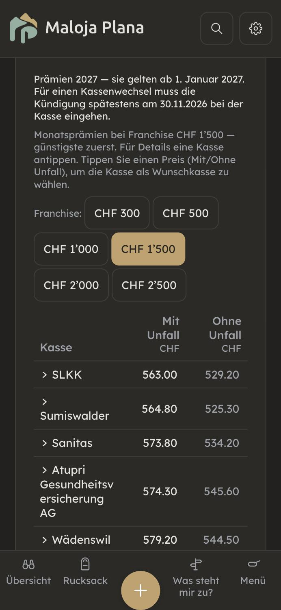
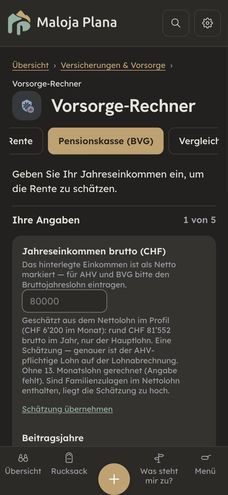

Durchgang 09.11.2026. Acht Seiten: Kapitelseite Versicherungen, Versicherungs-Übersicht, Prämienverbilligung (allgemeiner Teil; die Kantonsseiten sind heute separat geprüft), Krankenkasse wechseln (mit Zusatzversicherung), Krankenkasse zum ersten Mal, Vorsorge-Rechner, Pensionierung, Ergänzungsleistungen. Im Browser gemessen (375 px, Beispiel «Maria Muster, Zürich»), Fachprüfung in zwei Teilen mit Netz (Fedlex-Volltexte KVG, KVV, VVG, UVG, UVV, ATSG, AHVG, ELG, BVG; priminfo-FAQ des BAG; AHV-Merkblätter 3.01 und 3.04), Rechnungen mit Node gegen den Rechner-Code, Textprüfung über 1086 Texte. Kernstellen von Hand gegengelesen (UVV Art. 13, KVG Art. 8, AHVG Art. 34bis, Vorsorge-Rechner Zeile 557). Gebaut ist nichts.
Gut: Kündigungsfrist 30.11. mit Werktag-Regel, Sonderkündigungsrecht, Franchisestufen und Selbstbehalt, Franchise-Vorschlag nach dem 30.11., Zusatzversicherung nach VVG, AHV-Skala 44 für 2026 und 2027, 13. AHV-Rente, Vorbezugs- und Aufschubsätze, BVG-Grenzwerte 2026 und die EL-Schwellen stimmen am Gesetzestext. Alle Texte haben ein Gegenstück in allen fünf Sprachen, Sie und du sind sauber getrennt.
| # | Seite | Befund | Empfehlung |
|---|---|---|---|
| V1 | Kapitelseite, Versicherungs-Übersicht | Allen Angestellten wird geraten, die Unfalldeckung bei der Krankenkasse abzuwählen. Ob sie mindestens 8 Stunden pro Woche bei einer Arbeitgeberin arbeiten, prüft die App nicht (UvgHinweis.jsx fragt nur «angestellt?»). Wer weniger arbeitet, ist in der Freizeit nicht unfallversichert und hat nach dem Abwählen eine Lücke. (UVV Art. 13 Abs. 1, KVG Art. 8 Abs. 1, gelesen) | Rat nur mit Bedingung «mindestens 8 Std./Woche bei einer Arbeitgeberin». Dazu: bei Stellenende Unfall wieder einschliessen, Deckung endet am 31. Tag, Abredeversicherung bis 6 Monate (UVG Art. 3). |
| P1 | Vorsorge-Rechner | Mit IK-Auszug sinkt die AHV-Rente auf rund die Hälfte (bekannt als B-17). Gezählt werden nur die Beitragsjahre bis heute, nicht die bis zur Pension. Beispiel Mann, 40, IK 20 Jahre à 80 000: Rente 1 081 statt 2 379. Der Text verspricht beim Einschalten eine «genauere Schätzung». | Zu den IK-Jahren die erwarteten Jahre bis zum Referenzalter dazurechnen, wie ohne IK. Mit rotem Test zuerst. |
| P2 | Vorsorge-Rechner, Zukunftsbild | AHV fliesst ab dem Rücktritt, auch mit 58 (B-18). Bei Rücktritt 58 zählt die Grafik fünf Jahre AHV zu viel, rund 104 000 Franken. Frühester Bezug ist 63 (AHVG Art. 40 Abs. 1). Der Text daneben sagt «58–63 ohne AHV» und widerspricht der Grafik. | AHV erst ab dem frühestmöglichen Bezug zählen, Lücke bis dahin sichtbar. |
| P3 | Vorsorge-Rechner | Früher beziehen ergibt ab 65 eine höhere Rente (B-19). Das Feld «Bezugsalter» nimmt 60 oder 58 an; ohne eingetragene Beitragsjahre rechnet es dann ab 65 mit 2 092 bzw. 2 107 statt 2 070. Ein falsches Entscheidungssignal. | Bezugsalter in der Rechnung auf den frühesten Vorbezug begrenzen und das sagen. |
| P4 | Vorsorge-Rechner | Der Rentenzuschlag für Frauen der Jahrgänge 1961–1969 fehlt (160/100/50 Franken pro Monat, lebenslang, entfällt beim Vorbezug). Der Vorbezug sieht deshalb günstiger aus, als er ist. (AHVG Art. 34bis, gelesen; Merkblatt 3.04) | Zuschlag rechnen; mindestens beim Vorbezug-Hinweis nennen. |
| V2 | Krankenkasse wechseln | «Wechseln können Sie nur, wenn Sie keine offenen Prämien haben. Offene Beträge zuerst begleichen.» Wer das liest, kündigt vielleicht nicht bis 30.11. Die Kündigung gilt, wenn das Gemahnte bis Ende der Kündigungsfrist bezahlt ist. (KVG Art. 64a Abs. 6, KVV Art. 105l; Prüfer, nicht von Hand gelesen) | «Trotzdem bis 30.11. kündigen; der Wechsel gilt, wenn alles Gemahnte bis 31.12. bezahlt ist.» |
| V3 | Versicherungs-Übersicht | «Im schlechtesten Jahr bis zu CHF …» klingt wie eine feste Grenze. Der Spitalbeitrag von 15 Franken pro Tag kommt dazu, ohne Obergrenze. (KVG Art. 64 Abs. 5, KVV Art. 104) | Spitalbeitrag nennen. |
| V4 | Zusatzversicherung wechseln | «3 Monate aufs Jahresende» und eine Erinnerung jedes Jahr am 30.9. Gesetzlich kündbar ist der Vertrag erst auf Ende des dritten Jahres; die Kündigung muss eingegangen sein. (VVG Art. 35a) | «In den ersten drei Jahren nur, wenn die Police es erlaubt. Bis 30.9. eingegangen.» |
| V5 | Krankenkasse zum ersten Mal | Ausländische Personen sind ab der Anmeldung bei der Gemeinde versichert, nicht ab dem ersten Tag; mit L-Bewilligung unter 3 Monaten gilt die Pflicht ab Einreise. (KVV Art. 7, Art. 1 Abs. 2) | Zwei Sätze ergänzen. |
| P5 | Vorsorge-Rechner, Pensionierung | Frühester Vorbezug ist fest 63. Frauen der Jahrgänge 1961–1969 können mit 62 vorbeziehen; die Funktion dafür gibt es im Code, sie wird nicht benutzt. (Merkblatt 3.04) | Einbinden. |
| P6 | Pensionierung | Die Erinnerung kommt 180 Tage vor dem Referenzalter. Ein Vorbezug geht nicht rückwirkend; wer auf die Erinnerung wartet, verliert Monate. (AHVG Art. 40 Abs. 1) | Satz ergänzen; beim Vorbezug die Erinnerung vor das Wunschdatum legen. |
| P7 | Vorsorge-Rechner (Pensionskasse) | Umwandlungssatz 6,8 % für jedes Alter von 58 bis 70. Gesetzlich gilt er nur fürs Referenzalter; davor ist die Rente zu hoch. (BVG Art. 14 Abs. 2) | Vor 65: Hinweis «Ihre Kasse kürzt den Satz», eigenen Satz eintragen lassen. |
| P8 | Ergänzungsleistungen | «Ohne AHV- oder IV-Leistung ist die Sozialhilfe zuständig» ist zu absolut: EL gibt es auch, wenn nur die Mindestbeitragsdauer fehlt. (ELG Art. 4 Bst. b, d) | «in der Regel» und die Ausnahme. |
| P9 | Vorsorge-Rechner, Kapitalbezug | Die 3-Jahres-Sperre nach einem Einkauf fehlt neben dem Steuervergleich. (BVG Art. 79b Abs. 3) | Ein Satz. |
| K | verschiedene | Kleiner: Einschreiben im Postfach gilt erst beim Abholen · Prämienzuschlag bei später Anmeldung «muss», 30–50 %, nicht «kann» · Franchise gilt nicht bei Mutterschaft · zweiter Wechseltermin 30.6. fehlt · Erinnerung 30.11.2030 fällt auf einen Samstag (ungetestet) · Kapital: nur ein Viertel gesetzlich garantiert, Zustimmung Ehegatte · IK-Einkommen ohne Aufwertung · 3a-Einzahlung im Rechner unbegrenzt · Frist für den Aufschub · Freizügigkeit «nach 6 Monaten» (FZG prüfen) · BVG-Mindestzins 2027 nachtragen · fehlende Quellen bei Schuldensperre, 8-Stunden-Regel, junge Erwachsene. | Ergänzen oder belegen. |


| # | Befund | Empfehlung |
|---|---|---|
| S1 | Generisches Maskulin: «Arbeitgeber» in 9 Texten, Feldoption «Über Arbeitgeber», «Einkommen Partner», «Ehepartner», «eine Witwe auch ohne Kinder». | «Arbeitgeberin oder Arbeitgeber», Feldoption «Über die Anstellung», «Einkommen der Partnerin oder des Partners», «Witwen- und Witwerrente». |
| S2 | Gesetzesangaben mitten im Satz (61 Stellen; ein Satz mit drei IVG-Artikeln). | Wie Kapitel 1–3: in die Quellenzeile. |
| S3 | Kürzel als Name der Sache: «Was passiert mit Ihrem BVG bei Jobwechsel?», «BVG-Guthaben» (31 Texte), KVG/VVG/KTG in Knöpfen, IK und PK unerklärt. | «Pensionskasse», «Pensionskassen-Guthaben»; Knöpfe ohne Kürzel; «Beitragskonto (IK)» beim ersten Mal. |
| S4 | Absätze bis 91 Wörter, vor allem Ergänzungsleistungen und Pensionierung. | Teilen; EL-Schwellen als kurze Liste. |
| S5 | Beschwichtigen und Werten: «Hier der ruhige Überblick» (2×), «Ein ruhiger Weg in vier Schritten», «ohne Scheu», «Kurz innehalten»; «das kann die Kosten deutlich senken» (hängt vom Kanton ab). | Durch die Sache ersetzen («Vier Schritte: vergleichen, wählen, kündigen, Frist notieren»); «deutlich» streichen. |
| S6 | Mehrere Namen: Prämienverbilligung / «Verbilligung» / IPV; Kasse / Krankenkasse / Versicherer; AHV-Altersrente / AHV-Rente / Rente; «3. Säule» neben «Säule 3a». | Je ein Name: Prämienverbilligung, Krankenkasse, AHV-Rente, Säule 3a. |
| S7 | Holprig: «Kündigen Sie sie nie vorschnell mit — prüfen Sie sie zuerst.» | «Kündigen Sie die Zusatzversicherung nicht mit — prüfen Sie sie zuerst.» |
| S8 | Englisch: deutsche Gesetzeskürzel (KVG 17×), «EL» als Kürzel, «franchise» neben «deductible», «premium subsidy» neben «premium reduction», «Basic insurance has a duty to accept». | Ein Begriff je Sache («deductible», «premium reduction»); «no insurer may turn you down». |
| S9 | fr/it klein: «caisse-maladie» und «caisse maladie» gemischt; it «assicurato·a da bambino»; RIP, PC unerklärt. | Eine Schreibweise; «da bambina o bambino»; Kürzel ausschreiben. |
| S10 | Rätoromanisch: 150 Texte dieses Kapitels sind wörtlich Deutsch (Krankenkasse wechseln 42 von 60, EL 31 von 42). Fünf Texte ohne Sie-Fassung. | Nicht in diesem Zweig: rm braucht eine Person, die Romanisch schreibt. Die fünf Sie-Fassungen gehen mit. |
main: